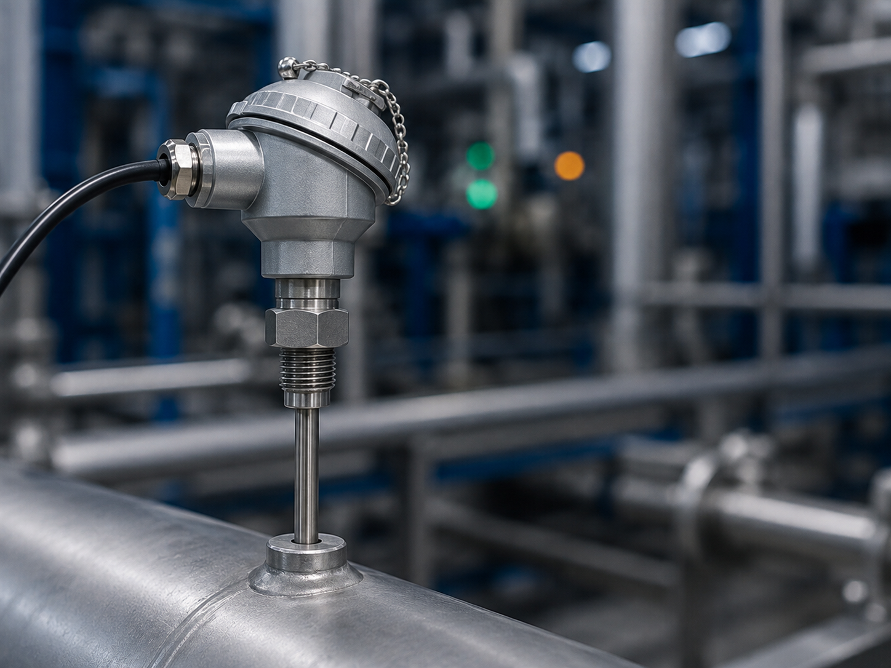
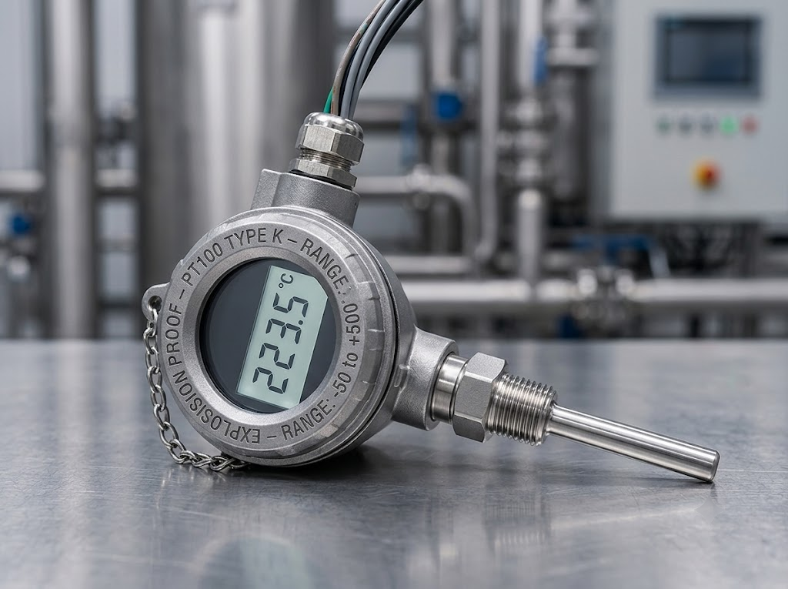
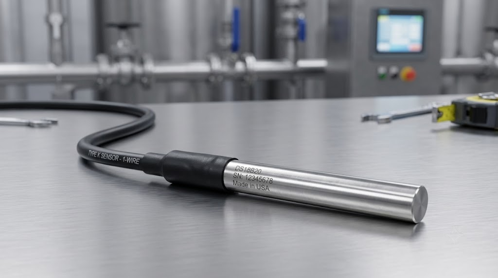

Temperatura
Dispositivo que mede a temperatura do ambiente, superfícies ou fluidos, convertendo a energia térmica em um sinal elétrico para monitoramento e controle de processos.

Conceito e Aplicação
O sensor de temperatura é um instrumento essencial em praticamente todos os processos industriais, convertendo a energia térmica em sinais elétricos mensuráveis. Existem diversos tipos, como termopares, termorresistências (Pt100), termistores e sensores infravermelhos, cada um adequado a faixas específicas de temperatura e condições de operação.
- Controle de processos industriais;
- Câmaras frigoríficas e cadeia do frio;
- Sistemas de climatização e HVAC.
Informações Complementares

Funcionamento
Converte a energia térmica em sinal elétrico por meio de termopares, termorresistências ou termistores, variando resistência ou tensão conforme a temperatura.
Saiba Mais
Aplicações
Controle de fornos e caldeiras, monitoramento de câmaras frigoríficas e regulação de sistemas de climatização em edifícios e hospitais.
Saiba Mais
Vantagens
Alta precisão, ampla faixa de medição, resposta rápida e disponibilidade em diversos formatos para diferentes tipos de aplicação.
Saiba MaisEmpresas
As principais empresas que fabricam sensores de temperatura são referências globais em instrumentação e controle de processos. Em 2025, marcas da Europa, Ásia e América do Norte se destacam pela precisão, confiabilidade e inovação tecnológica de seus dispositivos.
A WIKA, a Yokogawa e a Honeywell estão entre as líderes na fabricação de sensores de temperatura industriais. Com atuação global, essas empresas oferecem termopares, termorresistências e transmissores de temperatura para os mais diversos setores, como químico, petroquímico, farmacêutico e alimentício.
WIKA: Empresa alemã líder mundial em instrumentação de pressão, temperatura e nível. Seus sensores de temperatura incluem termorresistências Pt100 e termopares de alta precisão, com certificações ATEX e IECEx para áreas classificadas e aplicações críticas em indústrias de processo.
YOKOGAWA: Gigante japonesa da automação industrial, reconhecida pela excelência em instrumentação. Fabrica sensores e transmissores de temperatura com tecnologia de ponta, oferecendo alta estabilidade e precisão em medições para as indústrias química, petroquímica e de energia.
HONEYWELL: Conglomerado americano presente em diversos setores industriais, desenvolve sensores de temperatura robustos e versáteis. Seus produtos abrangem desde termistores e termopares até sensores infravermelhos, atendendo aplicações aeroespaciais, automotivas e de HVAC.